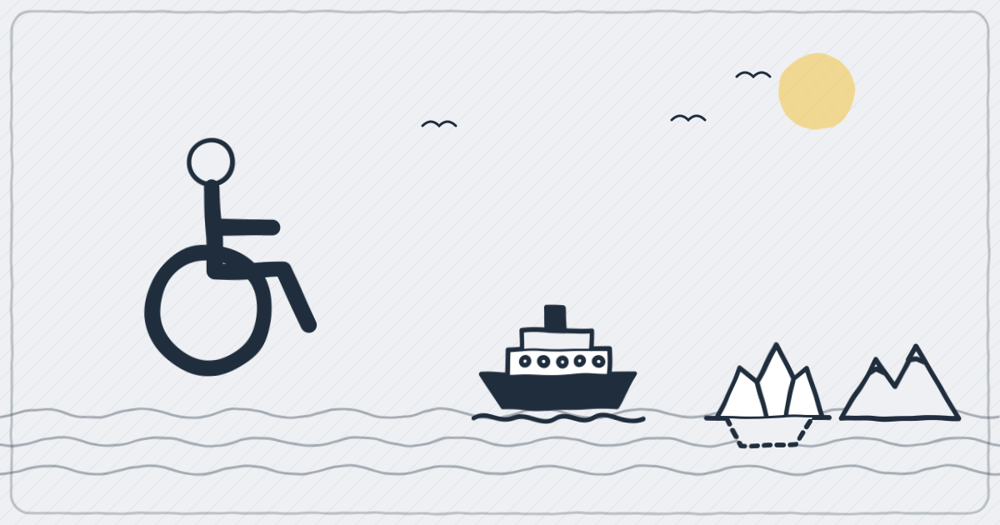

Wheelchair-Accessible Alaska Cruise: Ports, Cabins, Tenders
Yes, Alaska suits wheelchair users well: the glaciers, fjords and most whale sightings are watched from the ship, and Juneau, Ketchikan and Skagway dock rather than tender on nearly every call. Book a fully accessible cabin early, confirm the berth for each port, and send the line's special needs form before the deadline.

An Alaska cruise works well from a wheelchair, better than most people expect. The big moments, Glacier Bay, Hubbard Glacier, Tracy Arm and the humpbacks off Icy Strait, are watched from the deck or your balcony, with no gangway involved, and the three main ports dock on almost every call. What needs planning is the cabin, the berth at each port and the tour operators, in that order.
Which Alaska ports can you roll off the ship in?
Berthing is assigned sailing by sailing, so treat this as the usual pattern and ask your line for the berth on your dates.
- Juneau docks at one of three downtown berths with level streets and dropped kerbs; a fourth, AJ Dock, is about a mile out with a shuttle. Only a fifth ship on a peak day tenders.
- Ketchikan docks at four downtown berths on a flat waterfront; Ward Cove, used mainly by Norwegian, is about seven miles out with buses. Creek Street's boardwalks are bumpy.
- Skagway docks. The Railroad Dock needs a shuttle bus or small ferry into town because of rockfall risk; Broadway and Ore docks run a paid shuttle.
- Sitka mostly docks at a terminal about six miles north of town, with a free lift-equipped shuttle on a booked time slot; some small ships tender. Ocean swell at the terminal can steepen the gangway.
- Icy Strait Point docks at one of two piers, one beside the attractions and one a 15-minute walk away with a gondola.
- Victoria, BC docks at Ogden Point, about 2.5 km from downtown, with an accessible shuttle on request.
What is the difference between accessible cabins on each line?
Royal Caribbean publishes the most detail: cabin and bathroom doors of 32 to 34 inches depending on the ship, no sill at the cabin door, a ramped bathroom threshold, a roll-in shower with a fold-down bench, grab bars, lowered sink, closet rod and safe, a raised toilet seat of 17 to 19 inches, and a five-foot turning circle. Accessible cabins run from about 159 to 298 square feet, and selected ones have a balcony with a fold-down threshold ramp.
Holland America, with the largest Alaska fleet out of Vancouver, uses three labels. Fully Accessible has wide doors, a roll-in shower and turning space on both sides of the bed; Single Side Approach has wheelchair access on one side only; Ambulatory Accessible is for people who can walk a few steps, and its doors may be too narrow for a chair or scooter.
Whatever the line calls it, get three things in writing from the access desk: the door width, the shower type and whether the balcony has a ramp or a step.
When do you need to book an accessible cabin for Alaska?
Earlier than anything else on the trip. A ship carries from a handful of accessible cabins to a few dozen across all grades, and July and August sailings fill them first.
- Hold the accessible cabin as soon as your dates firm up, for peak summer 12 to 18 months out, before flights, hotels or the land tour.
- Return the special needs form promptly. Royal Caribbean asks for 30 days' notice for equipment such as commode chairs and 60 days for sign-language interpreters; other lines have similar windows.
- Ask for the berth list for your sailing and note any port marked as a tender call.
- Book accessible tours through the ship or an operator who confirms the lift-equipped vehicle in writing. These sell out before the regular versions.
- Arrange flights, the pre-cruise hotel and the transfer last, once the cabin number is confirmed.
The guide to picking a cabin and side for Alaska covers what you see from each grade. For a wheelchair user the accessible balcony with a ramped threshold is the one worth paying for, because glacier mornings are spent in the cabin as much as on deck.
Can a wheelchair user go ashore at a tender port?
Sometimes, and it depends on the chair as much as the port. Crew carry manual chairs onto the tender on calm days, but each line caps the weight its staff may lift; Princess, for example, sets 50 pounds for the chair and 600 pounds for chair plus passenger on its lifts. A powered chair or scooter is usually over the limit, so at a tender call it stays on board unless the ship has a platform that lowers to water level, as Celebrity's Edge-class ships do. On a standard Alaska route this rarely comes up. Keep it in mind if your itinerary includes Sitka on a small ship, or a bonus call such as Haines or Wrangell.
Which Alaska excursions actually work in a wheelchair?
Book the adapted version rather than hoping the standard one copes.
- White Pass railway, Skagway. The wheelchair-accessible version of the summit trip loads at the dock, uses a lift rated for 700 pounds and a chair up to 51 inches long by 30 inches wide, takes manual and electric chairs, and runs about 2 hours 45 minutes. Tell the tour office at least 48 hours ahead. Companions book the standard version of the same train.
- Mendenhall Glacier, Juneau. Paved from the bus stop to the visitor centre and along the gently graded Photo Point trail to the lake view.
- Whale watching, Juneau and Victoria. The larger boats take chairs and scooters with step-free boarding; Victoria's catamarans are usually fully accessible.
- Ketchikan totem parks. Lift-equipped buses run from the piers; the packed-gravel paths are hard work when wet.
A tour in every port backfires for anyone, and on wheels the transfers add up. Two adapted tours plus a glacier day from the ship is a full week.
Getting to the ship: Vancouver, Seattle and the flight
Canada Place in Vancouver is covered by Canada's Accessible Transportation for Persons with Disabilities Regulations. If you need a wheelchair inside the terminal, ask the cruise line before you arrive; rental scooters and chairs for the voyage come from Scootaround or Special Needs at Sea and must be pre-booked. The terminal sits beside Waterfront station, so the Canada Line from YVR is step-free the whole way, with elevators at both ends.
Alaska is US territory, so Canadians need the right ID for an Alaska cruise from Vancouver even on a round trip, and the provincial plan pays almost nothing there, so cruise travel insurance covering your conditions and your equipment is not optional.
What should you ask the line before you pay the deposit?
- Which cabin numbers are fully accessible in my category, and which have roll-in showers?
- What are the cabin door width, bathroom door width and balcony threshold on that cabin?
- Which ports on my sailing dock, and which might tender?
- Which Alaska excursions have a lift-equipped vehicle, and how do I book them?
Get the answers by email, so they travel with you.
Want this checked for your own sailing? A licensed cruise consultant can price it up and answer questions for free, with no obligation.
Ask a cruise expert →The short answer for Alaska on wheels
Book the cabin first, the ports will mostly dock, and the glaciers come to you. A consultant who books accessible cabins regularly can hold specific cabin numbers and check the berth list before you commit.
Questions people also ask
Do Alaska cruise ships tender, or do they dock?
On a standard seven-night Inside Passage loop the ship docks at Juneau, Ketchikan and Skagway. Tenders are the exception: a fifth ship in Juneau on a busy day, some smaller ships at Sitka, and the occasional anchorage at Icy Strait Point in bad weather. Ask the line for the berth assigned to your sailing.
How wide is the door on an accessible cruise cabin?
On Royal Caribbean the cabin and bathroom doors are 32 to 34 inches, depending on the ship, with no sill at the cabin door and a ramped bathroom threshold. Other lines are similar but publish fewer figures, so ask the access desk for your cabin's door width and shower type in writing.
Can I take a mobility scooter on an Alaska cruise?
Yes. A standard scooter fits through a normal cabin door, while heavier bariatric models need an accessible cabin. The scooter has to be parked and charged inside your cabin, never in the corridor, and most lines will not lift a powered scooter onto a tender.